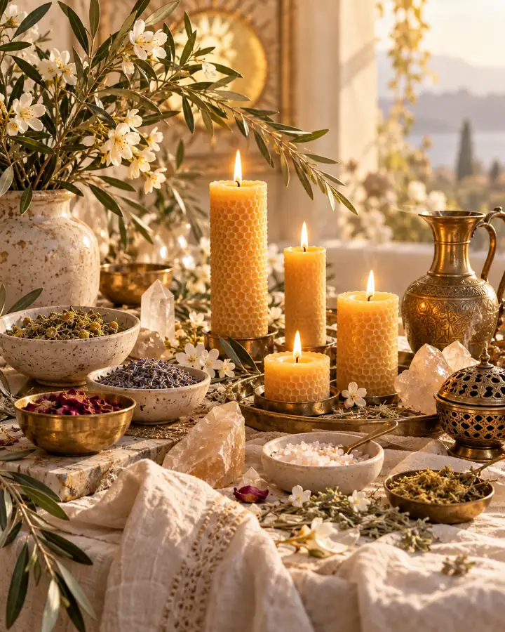
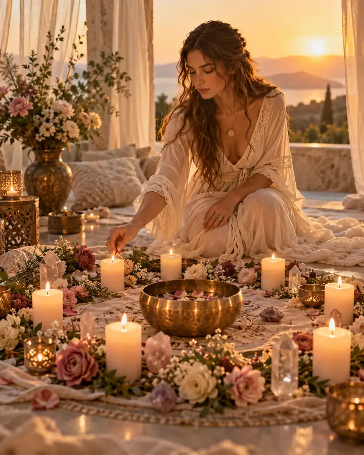
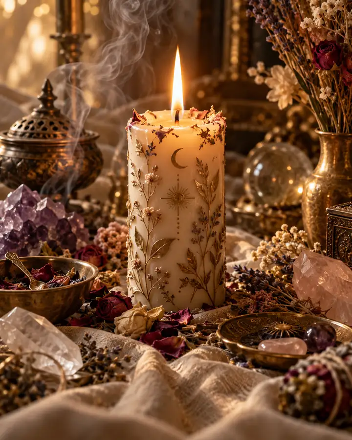
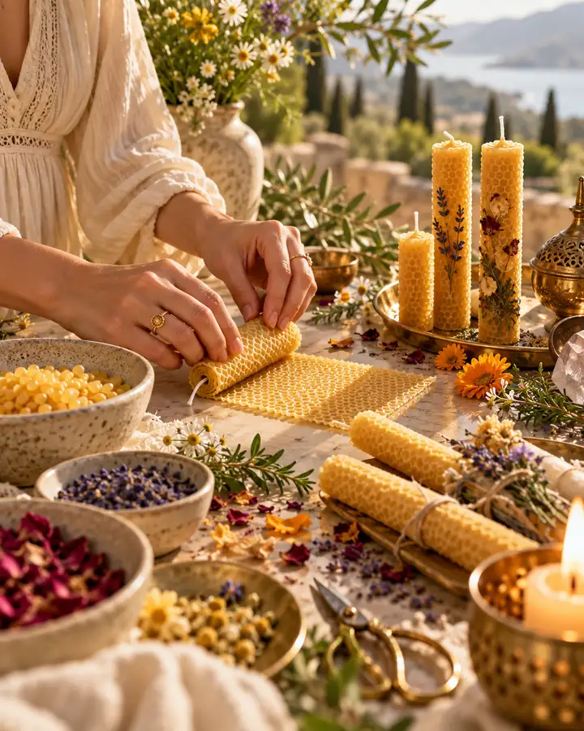

О ФОРМАТЕ
От ремесла к осознанной практике
Программа выстроена от основы к практике. Сначала — материал и безопасность, затем — способы изготовления, наблюдение за горением и символическая работа с огнём.

Натуральный воск, внимание к материалу и работа руками. От знакомства со свечой — к собственной осмысленной практике.
Онлайн · уроки и практика · авторские материалы
Уже участвую — войти в кабинет ↗Программа выстроена от основы к практике. Сначала — материал и безопасность, затем — способы изготовления, наблюдение за горением и символическая работа с огнём.
Свечи, травы, натуральные фактуры и ручная работа — без декоративной эзотерики, с вниманием к материалу и безопасности.




Последовательность работы делает результат красивым, устойчивым и безопасным.
фактура и свойства
подбор и подготовка
техника изготовления
безопасность и горение
наблюдение и смысл
Для тех, кто хочет соединить красивое ремесло, внимательность к деталям и личный смысл.